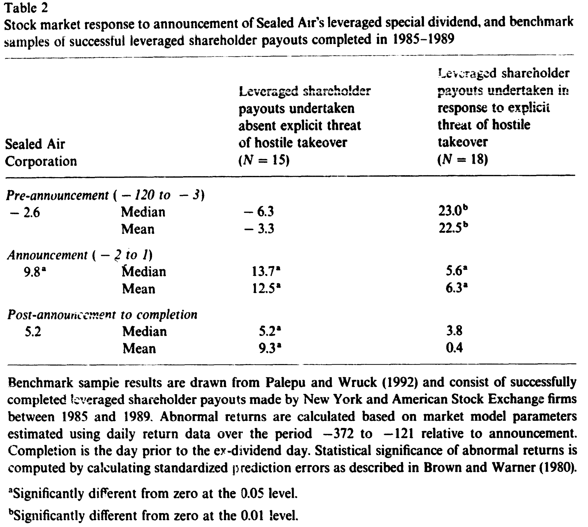
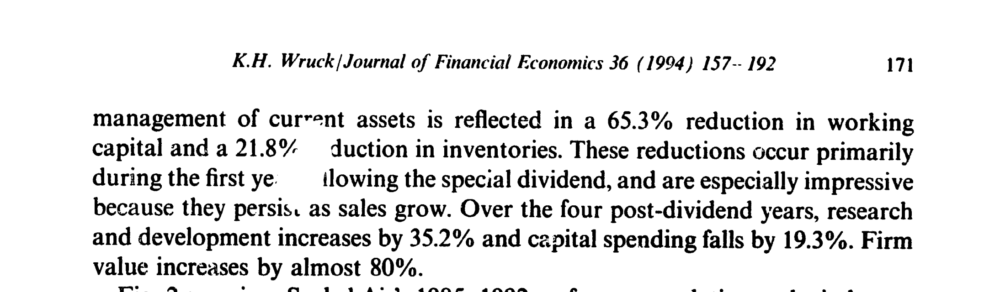
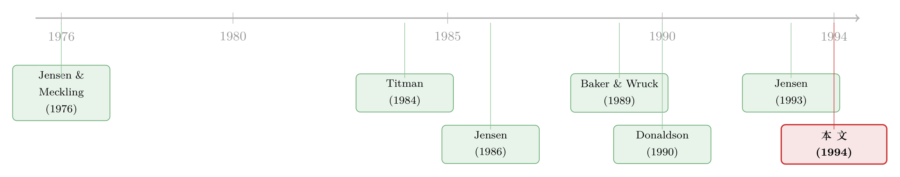

九倍的债，没人逼，他偏要借——一家公司如何用杠杆「逼」自己脱胎换骨
本文读的是 Wruck (1994, Journal of Financial Economics)：没有被收购威胁、手握大把自由现金流的 Sealed Air，主动把负债扩张了九倍去派发一笔特别股利；市场对公告的反应平平无奇（约 9.8%，与同类交易无异），可此后三年半，它的股票却跑出了 275.7% 的累计收益、183.3% 的 CAPM 异常收益。这篇临床案例想说的，不是「杠杆吐出了现金」这么简单——而是管理层把财务杠杆当成一把凿子，亲手凿碎了公司内部的「岁月静好」，重写了薪酬、考核与决策权，逼出了一场没人替它安排的内部变革。
1 一个反常的故事
先说一个让人有点摸不着头脑的场景。
1989 年 4 月 27 日收盘后，Sealed Air 发了一纸公告：派发每股 $40 的一次性特别股利。要知道，公告前 30 天里，这只股票也不过在 $44.125 到 $45.875 之间徘徊。换句话说，公司打算一次性把接近一整个市值的钱——$329.8 百万，约等于股权市值的 87%——塞回股东口袋。它账上没有这么多现金，于是借了 $306.7 百万的债。这家此前十年负债率长期只有 13%、账上现金比债务还多的公司，一夜之间把债务推到了总资产的 136%。
通常我们见到这种「举债派现」(leveraged payout)，第一反应是：是不是有人在门口敲门？八十年代的美国，相当多公司是被敌意收购者逼到墙角，才慌忙借债把现金分掉、把自己变得「不好吃」。可作者翻遍了 DOW Jones 新闻线的存档，又跟管理层反复核对，结论是：没有。Sealed Air 在特别股利前后都没有遭遇任何收购要约或传闻，管理层没有金色降落伞、没有雇佣合同、公司也没通过任何反收购章程修正案。
那么问题就来了：一家没人逼、自己日子过得还行的公司，凭什么要主动给自己套上九倍的杠杆？
更耐人寻味的是接下来这一幕。市场对公告的反应——按作者的话说——「典型」得令人失望。可派完之后的三年半，这家公司的业绩却像换了一台引擎。本文要回答的，正是这中间的落差：如果这场价值创造在公告时没被市场看见，那它究竟是从哪里冒出来的？
2 这到底是一笔什么样的交易
我们先把这笔交易的「财务体检表」摊开。
Sealed Air 借的 $306.7 百万里，$136.7 百万来自一份高级有担保银行贷款，$170 百万先用过桥票据顶上，随后在 1989 年 6 月通过一笔利率 12.625%、十年期的高级次级票据再融资掉——这笔债被标普评为 B、穆迪评为 B1，已经踩进了垃圾级。
派息前后的对照是触目惊心的（详见 Table 1）：负债占总资产的比例从 13.0% 跳到 136%；扣除现金后的净债务占比从 -8.1%（账上现金比债还多）翻成 125.1%；利息保障倍数从 14.7 倍掉到 2.1 倍；账面净资产更是从正的 $162.3 百万，直接变成负的 $160.5 百万。注意：在多数财务经济学家眼里，账面净资产为负根本不算事，但它当年着实把一批机构股东吓得不轻——这条伏笔后面会再提。
那么市场怎么看？这就是这篇论文识别策略的第一块基石。作者没有用什么花哨的计量，而是老老实实地把 Sealed Air 放进一个干净的对照框架里：Palepu and Wruck (1992) 整理出的 33 笔 1985–1989 年间完成的举债派现样本，其中 18 笔是在敌意收购者的追逐下做的，15 笔则是在两年内毫无收购威胁的情况下做的。一笔交易该归到哪一类，事先就决定了它「该有」什么样的股价轨迹。

Table 2
如表 2 所示，对照得相当漂亮。在公告前的窗口（第 -120 到 -3 天），受收购威胁的 18 家公司平均跑出了超过 22% 的显著涨幅——市场早就闻到了收购的味道；而 Sealed Air 这一段只有不显著的 -2.6%，干净得像什么都没发生，正好印证了「没有收购预期、信息也几乎没有提前泄露」。到了公告窗口（第 -2 到 +1 天），Sealed Air 的异常收益是显著的 9.8%——这个数字落在无收购威胁组的平均 12.5% 之下、收购目标组平均 6.3% 之上。
一句话：从市场反应看，Sealed Air 就是一笔「教科书式」的、无收购压力下的举债派现，平平无奇。
3 市场为什么「看走眼」了
接着，一个自然的问题是：公告时那 9.8% 的上涨，钱到底是从哪儿来的？
作者把账算给我们看。从公告前两天到交易完成，Sealed Air 的股权价值增加了 $42.7 百万；把异常收益折算成美元，是 $55.5 百万的异常股权价值增量。然后她在保守假设下（34% 税率、债务并非永久性融资、不扣除财务困境的预期成本）估算了新增债务带来的税盾现值——$61.3 百万。
两个数字几乎贴在一起：$61.3 百万的税盾，比市场 $55.5 百万的异常反应还多出区区 $6 百万。
这一步是全文的转折点，值得停下来体会。它说明：公告时市场给 Sealed Air 的那点上涨，几乎全部可以用税盾解释。如果市场预见到这场交易会带来内部控制改善、效率提升那样的大额价值创造，它一分钱也没反映在完成前的股价里。（关于「举债吐出自由现金流」这条主线，可参见《现金为什么一定要「还」出去？——四十年后，重读 Jensen 的自由现金流》。）
于是真正的悬念被推到了台前。再看派息之后的事实——

Figure 2: examines Sealed Air’s 19851992 performance relative to the industry
作者构造了一个非常直观的「异常业绩指数」(abnormal performance index)：把累计实际收益除以累计的 CAPM 预期收益，没有异常表现时它就等于 1。形式上：
$$ \text{Index}_t = \frac{\text{cumulative actual return}_t}{\text{cumulative CAPM expected return}_t} $$
为排除「整个行业都在涨」这种平庸的解释，她又拿七家包装行业公司搭了个对照组合。结果如上图：派息前的 1989 年 3 月，Sealed Air 的指数是 1.110，行业是 1.104，几乎贴在一起；派息之后，两条线开始分道扬镳，到 1992 年 2 月达到最大差距时，Sealed Air 已经飙到 3.806，而行业只有 0.948——前者是后者的三倍多。到 1992 年底，差距虽有回落，Sealed Air 仍站在 3.307，行业 1.029。
放到收益的语言里：派息后的 42 个月，Sealed Air 股票累计收益 275.7%，同期标普 500 只有 35.9%；用 CAPM 算出的异常收益是显著的 183.3%（年化 34.7%）；从 1989 年 6 月初那 $109 百万的股权基数算起，三年半里凭空多创造了 $308.5 百万的异常股权价值。在 Palepu and Wruck (1992) 的样本里，它是表现最好的那一家。
公告时市场只给税盾定了价，可后来真实发生的价值创造却是它的好几倍。这个落差，就是本文要解释的全部。
4 真正的故事，发生在公司内部
但真正关键的一步在于：这场业绩爆发，不是杠杆「自动」吐现金的结果，而是管理层主动用杠杆当工具，去撬动公司内部那台早已锈住的机器。
这里要先理解 Sealed Air 派息前的处境。它由 Dermot Dunphy 自 1971 年执掌，前 18 年顺风顺水，销售额从 1970 年的 $5 百万一路涨到 1988 年的 $345.6 百万。可它最值钱的那些产品——气泡膜、Jiffy 信封、Insta-Pak 泡沫——大多靠专利护城河活着，而管理层清楚地预见到：专利一旦到期，竞争就会扑面而来。公司当时既没有外部资本市场的压力，也还没尝到产品市场竞争的苦头，于是陷入了一种典型的「自由现金流 + 内部停滞」的舒适区。管理层此前试过推动内部变革，失败了。
CEO 自己的那句话，几乎就是这篇论文的题眼：「Our purpose was to use the company's capital structure to influence and even drive a change in strategy and culture...」——我们的目的，是用资本结构去影响、甚至驱动战略与文化的转变。
那么，杠杆是怎么「驱动」变革的？作者借用 Jensen and Meckling (1992) 的框架，把内部控制 (internal control) 系统拆成三个核心部件，并逐一对照 Sealed Air 做了什么：
第一，确立一个新目标。 沉重的还本付息把「现金」从一个抽象概念变成了悬在头顶的达摩克利斯之剑。公司给全体员工发了一张「新优先级」卡片，把目标钉死在现金流、世界级制造和客户服务上——价值最大化不再是财报上的口号，而是「这个月能不能还上利息」的生死线。
第二，改变薪酬系统。 把经理人的报酬与新的目标（尤其是现金的产生与运用）绑定，让每个人的钱包都对债务这根弦的松紧有反应。
第三，重新分配决策权。 公司重组了制造流程和资本预算流程，把决策权下放到真正掌握具体信息（specific knowledge）的人手里——谁离现金流最近，谁就更有发言权。
于是反转出现了：在外部资本市场和产品市场都「按兵不动」的当口，财务杠杆替它们出了场，扮演了那个本该由市场施加的「紧迫感」。借作者的话说，高杠杆人为地模拟了 Sealed Air 那个更具竞争性的未来——它把「狼来了」提前搬到了眼前。而个体行为的改变，又被薪酬、考核、决策权这三套内部控制系统接住、强化、固化下来。证据还表明：杠杆与内部变革，缺了任何一个都不够——光有债不会自动变好，光喊变革（此前就喊过）也推不动；是两者「互补」(complementarities)在一起，才点燃了业绩。
这正是本文区别于「杠杆=吐现金」标准叙事的地方。它讲的不是纪律的被动施加，而是管理层主动借一场财务交易，制造出一场内部的「人造危机」，并用它完成了一次自我革命。（同样从内部激励机制去解释价值创造的临床研究，可参见《incentives-downsizing-and-value-creation-at-general-dynamics》。）
5 文献脉络
把这篇 1994 年的论文放回它的坐标系，会看得更清楚。

故事的起点是 Jensen and Meckling (1976)——代理成本与资本结构的奠基之作，告诉我们债与股背后是一整套激励冲突。沿着「债能干什么」这条线，Titman (1984) 指出债务能逼困境企业在最该退出时退出；而真正把杠杆与「管理层纪律」焊在一起的，是 Jensen (1986) 的自由现金流假说：在现金充裕的公司里，增加杠杆能逼经理把钱吐出来、从而提升价值。
但到这里，财务经济学家大多还是把融资决策看成两件事：要么是传递信息的「信号」，要么是外部资本市场（收购威胁）施压解决代理问题的结果。两条线都对，却都没正面回答一个更根本的问题——经理该如何搭建内部控制系统，让组织里的每个人都去做价值最大化的决策？
方法论上，本文的直系前辈是 Baker and Wruck (1989) 对 O.M. Scott 分拆 LBO 的临床研究。但作者特意把 Sealed Air 和 Scott 划清了界限：Scott 是被母公司 ITT 在外部压力下卖掉的，面对的是「拿不到钱投好项目」（自由现金流的反面），而且 LBO 意味着组织形式的彻底改变（换了东家、换了治理、不再是上市公司）；Sealed Air 恰恰相反——没有外部 sponsor、没有强制改变股权、没有治理变更、也没卸下上市公司的成本，一切都是在任管理层的自愿选择。这让它成了一个罕见的、几乎「只动了资本结构这一个变量」的自然实验。
同期还有 Donaldson (1990) 对通用磨坊 (General Mills) 自愿重组的研究——但那场革命花了三十年、换了几届管理层；相比之下，Sealed Air 提供了一个「内部变革可以又快又狠」的反例。而 Jensen (1993) 在更宏观的层面呼吁：在敌意收购退潮的九十年代，研究内部公司控制系统正是未来的重要方向。Wruck (1994) 就坐在这个交汇点上：它用一个干净的案例，把「财务政策」正式写进了「内部控制」的工具箱。（关于 Jensen-Meckling 框架在今天的回响，可参见《债务这副药，为什么不能全吃？——重读 Jensen 和 Meckling 五十年》。）
评论与延伸（Q&A + 研究方向）
（a）几个可能的疑问
Q：这只是一个案例（N=1），凭什么能说明问题？
这正是临床研究 (clinical study) 的取舍。它放弃了大样本的统计普适性，换来的是对单一事件因果链条的纵深观察——能看到薪酬、考核、决策权这些大样本里测不到的内部细节。它的说服力不靠 t 值，而靠把每一种「外部解释」逐一排除：没有收购威胁、税盾解释了公告反应、行业组合排除了行业效应。把它当成一个生成假说、而非检验假说的工具，更恰当。
Q：业绩好，会不会只是「运气」或行业回暖？
作者搭了七家包装公司的行业组合做对照，正是为了堵这个口子。派息前 Sealed Air 与行业几乎重合（
1.110vs1.104），派息后才骤然拉开到三倍以上，而行业指数始终在 1 附近徘徊。这让「赶上了好行业」的解释很难成立。剩下的担忧是：会不会是某个与杠杆无关的特质（比如新产品周期）恰好同期发力？这一点案例本身无法完全排除。
Q：和 Jensen (1986) 的自由现金流假说到底有什么不同？
Jensen 强调的是杠杆被动地约束经理、强迫吐现金；本文强调的是管理层主动地把杠杆当催化剂，去重写内部控制系统。前者的价值来自「少浪费」，后者的价值来自「真改变」。关键证据是：公告时市场只给税盾（被动效应）定了价，而后续
183.3%的异常收益（主动变革）完全不在预期之内。
Q：既然是好事，市场为什么没在公告时定价？
因为内部控制变革的成败，事前对外部投资者是不可观测、也不可置信的——任何公司都可以宣称「我们要借债来倒逼改革」，但能不能真的改成，取决于管理层愿不愿意动自己的薪酬和决策权。市场理性地选择了「先看税盾、改革效果等兑现了再说」。这也提示：这类价值创造天然带着「事后才被定价」的特征。
Q：账面净资产变成负的 -$160.5 百万，为什么重要？
对财务经济学家来说它不重要（市值才重要）。但它在现实中触发了一批机构股东的强烈反应——有些机构受「审慎人」规则约束，不能持有账面资不抵债的公司。这说明资本结构的极端调整会与投资者的制度约束相互作用，是一条值得单独研究的暗线。
Q：这套「自我加压」的打法可以复制吗？
谨慎乐观。它要求三个条件同时成立：有自由现金流（否则加杠杆是找死）、有可预见但尚未到来的竞争压力（提供改革的「理由」）、以及一个愿意动自己奶酪的在任管理层。三者缺一，杠杆就可能从催化剂变成毒药。
（b）几个可能的研究问题与提案
-
「自愿举债派现」公司的债券持有人，赚了还是亏了？ 【经济故事】本文聚焦股东价值，但九倍杠杆对既有债权人是巨大的财富转移风险；Sealed Air 的次级票据还专门加了「控制权变更可回售」和限制并购的契约（Smith and Warner, 1979 所说的保护机制）。新债权人如何为这种「管理层自我加压」定价，是个干净的问题。【可行性】中。需要发行层面的债券价格/利差数据（如 TRACE 时代之后的样本）与契约文本，识别可用「自愿 vs 防御性派现」的分组做事件研究。
-
把「内部控制变革」做成大样本的可测变量。 【经济故事】本文最大的局限是 N=1。能否用文本分析（年报、薪酬披露、8-K）构造一个「内部控制系统变更强度」指标，去检验「杠杆×内部变革」的互补效应在横截面上是否稳健？【可行性】中。薪酬数据（ExecuComp）、披露文本可得；难点在于「决策权再分配」难以量化，且内生性强（谁选择加杠杆本身不随机）。
-
外资持有人结构会不会抑制这种「自我加压」？ 【经济故事】不同类型的股东对账面资不抵债、对高杠杆风险的容忍度差异很大（本文里机构股东就反应激烈）。如果一家公司的股东里外资/被动持有人占比高，管理层是否更难推动这类激进的资本结构重组？【可行性】中。需要持股人结构（13F、跨国持股数据）与重大资本结构事件匹配，识别上可借助持股人构成的外生变动（如指数纳入）。
-
「人造紧迫感」的剂量—反应关系：杠杆要多高才够「逼人」？ 【经济故事】本文是一次极端剂量（九倍）。一个自然延伸是：在自由现金流充裕的公司里，是否存在一个杠杆阈值，低于它「逼」不动管理层、高于它则把改革变成困境清算？【可行性】低到中。需要识别「以倒逼改革为目的」的杠杆调整（动机不可观测是硬伤），可考虑用结构化访谈或 CEO 公开陈述做样本筛选，但样本量会很小。
-
专利到期作为「未来竞争冲击」的工具变量。 【经济故事】Sealed Air 的动机之一是预见到专利到期后的竞争。能否用专利到期时点作为「未来产品市场竞争」的外生冲击，检验企业是否会在到期前主动调整资本结构与内部控制？【可行性】高。专利数据（到期日）可得且时点外生性较强，可与资本结构、投资、薪酬变化做事件研究，是一个 doable 的设计。
我的判断
这篇论文的贡献，不在于又发现了一个「杠杆有用」的证据，而在于它换了一个看待财务政策的角度：资本结构不只是融资和信号，它本身就是内部控制系统的一个部件，是管理层可以主动握在手里、用来撬动组织变革的杠杆。 在敌意收购退潮、外部纪律消失的年代，这个视角格外重要——它把「公司能不能自己逼自己改」这个问题，从空泛的治理口号，落到了一个可操作的财务决策上。
对识别的担忧也很诚实地摆在那里：N=1 注定了它无法排除所有「恰好同期发生」的特质性故事，「以倒逼改革为目的」这个核心动机更是高度依赖管理层的自我陈述，存在事后合理化的可能。183.3% 的异常收益固然惊人，但它有多少来自内部控制、多少来自一个本就要起飞的产品周期，案例本身切不干净。
我最想看到的后续，是把「杠杆×内部变革」的互补效应做成可检验的大样本命题：用文本与薪酬数据构造内部控制变更的强度指标，再借一个外生的「未来竞争冲击」（比如专利到期）来缓解内生性。如果那个互补项在横截面上依然显著为正，这篇 1994 年的临床观察，才算真正长成了一条经得起检验的理论。
参考文献
Baker, G., & Wruck, K. (1989). Organizational changes and value creation in leveraged buyouts: The case of The O.M. Scott & Sons Company. Journal of Financial Economics 25, 163–190.
Brown, S., & Warner, J. (1980). Measuring security price performance. Journal of Financial Economics 8, 205–258.
Donaldson, G. (1990). Voluntary restructuring: The case of General Mills. Journal of Financial Economics 27, 117–141.
Jensen, M. (1986). Agency costs of free cash flow, corporate finance, and takeovers. American Economic Review 76, 323–329.
Jensen, M. (1993). The modern industrial revolution, exit and the failure of internal control systems. Journal of Finance 48, 831–880.
Jensen, M., & Meckling, W. (1976). Theory of the firm: Managerial behavior, agency costs, and capital structure. Journal of Financial Economics 3, 305–360.
Jensen, M., & Meckling, W. (1992). Specific and general knowledge, and organization structure. In L. Werin & H. Wijkander (Eds.), Contract Economics. Basil Blackwell, Oxford.
Palepu, K., & Wruck, K. (1992). Consequences of leveraged shareholder payouts: Voluntary versus defensive recapitalizations. Working paper, Harvard Business School.
Smith, C., & Warner, J. (1979). On financial contracting. Journal of Financial Economics 7, 117–161.
Titman, S. (1984). The effect of capital structure on a firm's liquidation decision. Journal of Financial Economics 13, 137–151.
Wruck, K. H. (1994). Financial policy, internal control, and performance: Sealed Air Corporation's leveraged special dividend. Journal of Financial Economics 36(2), 157–192.